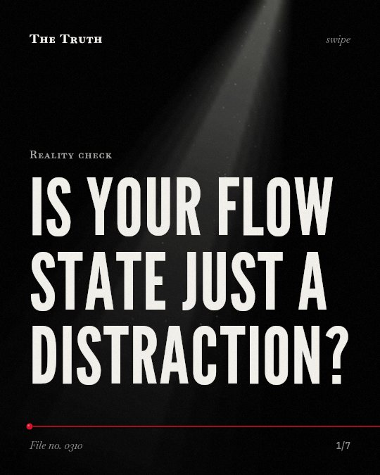

Reality check
Is your flow state just a distraction?

Flow requires simulation and skill balance.
The experience is not just high arousal. It depends on a balance between your skill and the task challenge.
Supported. At least one solid peer-reviewed study. The evidence is mixed.
What the research found
The activation of sensory and motor networks in the conjunction analyses underpinned the central role of simulation for flow experience.
“The activation of sensory and motor networks in the conjunction analyses underpinned the central role of simulation for flow experience.”
Study, 2011. Klasen et al., Social Cognitive and Affective Neuroscience.
The proneness to experience flow is linked to a significant correlation (r=. 41) between striatal D2-receptor availability and flow proneness.
“As hypothesized, there was a significant correlation (r=. 41) between striatal D2-receptor availability and flow proneness.”
Study, 2012. Manzano et al., NeuroImage.
Flow proneness is linked to personality dimensions characterized by low impulsiveness, stable emotion, and positive affect.
“We suggest that the proneness to experience flow is related to personality dimensions that are under dopaminergic control and characterized by low impulsiveness, stable emotion, and positive affect.”
Study, 2012. Manzano et al., NeuroImage.
Flow is linked to specific brain activation patterns that include reward-related midbrain structures, as well as cognitive and sensorimotor networks.
“Each of the content factors was characterized by specific and distinguishable brain activation patterns, encompassing reward-related midbrain structures, as well as cognitive and sensorimotor networks.”
Study, 2011. Klasen et al., Social Cognitive and Affective Neuroscience.
Flow is a cognitive state that happens when there is complete attentional absorption while doing a task.
“Flow is a cognitive state that manifests when there is complete attentional absorption while performing a task.”
Review, 2022. Kotler et al., Neuroscience & Biobehavioral Reviews.
Flow occurs when there is a balance between the challenge of the task and the relevant skillset.
“Flow occurs when certain internal as well as external conditions are present, including intense concentration, a sense of control, feedback, and a balance between the challenge of the task and the relevant skillset.”
Review, 2022. Kotler et al., Neuroscience & Biobehavioral Reviews.
The mechanics of your focus.
Flow is a cognitive state of complete attentional absorption. It involves reward-related midbrain structures and specific brain activation patterns.
Why your focus feels different.
That may be why you cannot enter flow when a task is too easy or too hard. Your brain requires a specific calibration of challenge and ability.
This part is our reading of the evidence, not a finding.
A late night at the desk.
You sit in a quiet room. The cursor blinks on the screen. You stop seeing the keys and only see the words forming in your mind.
The honest summary
The evidence shows that flow is a complex state involving dopaminergic function and reward structures, but it also requires specific cognitive balances and sensory-motor simulation.
The sources provide correlations and theoretical frameworks rather than definitive proof that flow is primarily a high-arousal state of distraction.
Is your current task actually challenging you enough?
Sources
- Steven Kotler, Michael Mannino, J. A. Scott Kelso et al. (2022). First few seconds for flow: A comprehensive proposal of the neurobiology and neurodynamics of state onset. Neuroscience & Biobehavioral Reviews. Review, cited 68 times.
- Örjan de Manzano, Simon Červenka, Aurelija Jučaitė et al. (2012). Individual differences in the proneness to have flow experiences are linked to dopamine D2-receptor availability in the dorsal striatum. NeuroImage. Study, cited 148 times.
- Martin Klasen, René Weber, Tilo T. J. Kircher et al. (2011). Neural contributions to flow experience during video game playing. Social Cognitive and Affective Neuroscience. Study, cited 269 times.
Also read for this file, not quoted
This file was researched and drafted by software, then checked by rules a model cannot talk its way around: each quote above was matched word for word against the paper, and every number had to appear in it. How files are made.